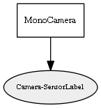

Global overview
All modules
All variables
All commands
Mission files
Pipelines
Variable: Camera-SensorLabel
Variable info:
Variable name
Short description
Who publishes it?
Who subscribes to it?
Camera-SensorLabel
Camera images as binary serializations of "CObservationImage" passed to std::vector<uint8_t> through ObjectToOctetVector()
MonoCamera
Variable graph:

Detailed description:
Camera images as binary serializations of "CObservationImage" passed to std::vector<uint8_t> through ObjectToOctetVector()
Page generated by
Mooxygen 1.1.0
at Thu Jan 22 11:30:21 2015